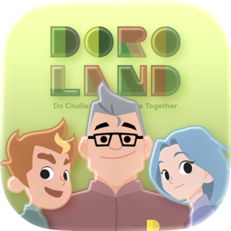

이현승
LEE HYUN SEUNG
로봇·AI 교육 콘텐츠 기획, 교구·소프트웨어 개발
AI가 세상을 바꾸는 속도만큼 교육도 빨라져야 합니다. 아이들에게 필요한 건 잘 만들어진 콘텐츠라고 생각합니다. 난이도는 유지하면서 재미있게, 트렌드에 맞춰 만드는 일을 가장 잘합니다.
8건
수주한 정부 과제
CAREER 주식회사 도로 기업부설연구소장, 콘텐츠개발팀장
EDU 한양대학교 ERICA 로봇융합전공 학사 (2025)
CONTACT dlgusmd@naver.com
Contents
목차
21
PAGES
프로젝트 6개
00 프로젝트 계보 위탁 사업에서 자체 제품까지
01 도로랜드 캠프 회사 첫 자체 IP · 세계관, 교구, 웹 미션, 캠프 운영 02 DIMC 역량 진단 4역량 체계, 문항, 결과지, 커리큘럼, 추천 모델 03 DOROBUS 온라인 학습 플랫폼 진단·수업·소통·체험 콘텐츠의 단일 계정 통합 · 운영 중
04 ESP32 통합 제어 보드 회로도, PCB, 수업용 결선도 05 위탁 교육과 현장 운영 과학캠프 · 기관 운영 · 강사교육 06 로봇 플랫폼 개발: DDaRo · EMOTIBOT 자율주행 쇼핑 로봇 · 생성형 AI 감정 케어 로봇
위탁 사업에서 자체 제품까지
2023.11 ~ 2026.09
위탁 사업 → 기획서 작성 → 정부 과제 → 과제 산출물을 제품에 적용 → 자체 제품
디지털새싹 2023.12 ~ 2024.02 · 교육부·KERIS(한국교육학술정보원)
공고와 과업지시서 분석으로 커리큘럼 설계, 교재 집필
국립중앙과학관 여름 과학캠프 2024.07 ~ 08 · 1박 2일
스토리와 전시관 미션으로 엮은 캠프 프로그램 설계
청소년 SW 동행 · STEAM 클럽 2024 ~ 2025 · 한국과학창의재단
로보틱스·SW 과정 개발과 보급
안산 생활과학교실 · 꿈꾸는 로봇데이 2025.01 ~ 2026.08 · 안산시인재육성재단
찾아가는 생활과학교실 4과정 × 4차시, 로봇데이 대회 2일 과정 설계·운영
안산 강소특구 ICT융복합 R&D + PoC(기술 실증) 2024.10 ~ 2025.01
과제명 「4대 역량 진단 프로그램 및 교구 개발」
중기부 산학연 Collabo 예비연구 2025.05 ~ 12 · 한양대 DB&AI 연구실
진단 기반 커리큘럼 추천 연구
SW중심대학 산학협력 2026.04 · 한양대 ERICA
진단과 성취도 평가를 잇는 학습 플로우
산학연 Collabo 본연구 2026.03 발표 평가
2년 계획. 발표자료 구성
도로랜드 캠프 2024.10 기획 → 2025.01 첫 기수
학생이 제작한 교구로 세계관 속 미션을 해결하는 1박 2일 캠프
도로랜드 러닝 시리즈 2025.10 알파 → 2026.03 정규
캠프 세계관을 학기 중으로 확장한 주 1회 온라인 과정
DOROBUS 2026 운영 중
진단 결과와 온라인 수업을 단일 계정으로 연결한 학습 플랫폼
→
→
회사 첫 자체 IP(회사가 기획하고 소유한 콘텐츠 브랜드). 고유 세계관 속에서 학생이 교구를 제작하고, 제작한 교구로 미션을 해결하는 캠프
재원 자체 제품, B2C 기수제
기간 2024.10 기획 → 2025.01 첫 기수 → 2026.07 챕터 4
구성 챕터 5종 제작, 4종 운영. 챕터당 1박 2일
역할 콘텐츠 리드. 세계관, 웹툰, 커리큘럼, 교구 도면, 교안, 미션 기획·제작
챕터별 6개월 개발 주기기획·설계
01
캐릭터와 다음 이야기 설정 다섯 캐릭터 · 도로랜드의 서사와 이어지는 사건
02
트렌드 중심 콘텐츠 선정 라인트레이싱 · AR 머지큐브 · AI 기반 활동 · 바이브 코딩 · 데이터 시각화
03
콘텐츠를 미션으로 각색 운전면허 시험 · 추리 수사 · 잠입 작전 · 자체 브레이크아웃 미션
04
교구 설계 · 제작 MDF 도면 설계 · 3D 파츠 모델링 → 시제품 → 회차 개정
05
교재 · PPT · 웹 미션 · 굿즈 제작 스토리 · 교구 · 교재 · 교육 PPT · 디지털 미션 · 굿즈 · 현장 운영물
06
운영 후 개정 회차 피드백 → 다음 회차 · 다음 챕터 반영
5개 챕터
CH1 신비한 초대 사파리 자동차 · 앱인벤터 제작 24.09 ~ 25.01
CH2 멈춰버린 기계의 노래 하모니아 · AI 이상감지 제작 25.02 ~ 25.07
CH3 잊혀진 시간 속으로 2족 보행 로봇 · AR 머지큐브 제작 25.08 ~ 26.01
CH4 구름 너머의 진실 바이브 코딩 · 데이터 시각화 제작 26.02 ~ 26.07
CH5 코덱스의 선택 제작 26.08 ~
설계 기준
1 트렌드에 맞는 기술인가? 해당 연도 주목 기술 선정 후 대상 수준에 맞춘 난이도 조정
2 하나의 세계관 속 미션으로 이어지는 활동인가? 미션·추리·탐구 중심의 캠프 구성, 챕터 전환 시에도 동일 캐릭터·서사로 연결
3 우리의 강점을 살리는가? 로봇·AI 전공 대학생 강사의 눈높이 맞춤 진행, 한양대 ERICA 연구실·시설 연계 편성
콘텐츠 제작
세계관, 스토리, 굿즈 제작
세계관 · 캐릭터 5인 · 챕터 웹툰 · 자체 플레이리스트 · 워크북 · 굿즈
캐릭터 구성 제로·리코·자일로·네이티·코덱스. 디자인 외주와 협업해 캐릭터를 제작하고 성격·말투·MBTI와 앞·옆·뒤 3면, 표정·동작을 세트로 구성. 학생 또래인 신입 직원 제로·리코를 이야기 중심에 두어 참여 학생의 몰입 유도
세계관 기술로 자연과 조화를 이루는 놀이공원. Do Challenge, To Ask, Be Together
챕터 웹툰과 영상 상영 콘티·대사 집필, 작화는 디자인 외주 운영. Supertone Play AI 더빙·자막 영상화 후 입소식·활동 전환 시점마다 상영
자체 플레이리스트 제작 Suno AI로 제작. 입소식·수료식·활동 장면별 플레이리스트로 편성
챕터마다 새로 제작하는 교재와 굿즈
챕터 워크북 50쪽. 스토리·미션 순서·조립 설명·코딩 실습 통합 구성
챕터 완주 뱃지 수료 시 지급. 챕터별로 색과 상징을 달리 제작
모바일로봇 운전면허증 시험 통과 시 발급. 캐릭터별 앞·뒤, 발급번호와 구역 설정
미션 맵지 라인트레이싱 주행과 운전면허 시험 코스를 인쇄한 맵
카드형 USB 챕터 키비주얼과 QR을 인쇄한 카드형 USB
캐릭터 키클리커 캐릭터 5종. 도트 도안을 DXF로 제작해 레이저 커팅
브레이크아웃 추리 소품
강의실을 수사 현장으로 연출
폴리스 라인, 증거 보드, 발자국 스티커, 포토월 배치. 미션 카드 14종, 현상수배지 4종, 진술서, 보안팀 힌트문 제작
기획·설계 하드웨어 설계 교육·운영
학생이 즐기는 1박 2일과 전용 교구
챕터당 1박 2일 · 초등 고학년 ~ 중등 · 웹툰 속 사건을 해결하는 5단계 미션
4 브레이크아웃
도트매트릭스 단어를 마스터키로 푸는 방탈출 미션
5 발표와 진로 세션
조별 발표와 로봇·AI 전공 멘토 세션
챕터 전용 교구 4종 MDF 도면 · 3D 파츠
CH1
사파리 자동차 MDF 차체. 차체 도면 · ESP32 펌웨어 · 앱인벤터 조종 앱 제작
CH2
하모니아 오선표 악보로 멜로디를 입력해 연주하는 음악 기계. 기어 구동부와 트랙 포함
CH3
2족 보행 로봇 보이드 몸통·팔·다리·발 파츠를 개별 3D 설계. 서보 제어 동작 7종
CH4
데이터 분석기 NFC 카드로 기록을 읽는 휴대용 단말. 3D 출력 외형과 버튼 배치 설계
도면 개정 하모니아 1차 → 7차
→
회차별 도면 개정 사이클 하모니아 7차, 사파리 자동차 차체 4차
1 챕터 설계와 교구 설계 병행, 미션 기반 구조·기능 결정
2 레이저 커팅·3D 출력 시제품 제작, 조립 순서 검증
4 강사 피드백·자체 점검으로 다음 회차 도면 수정
반복 캠프 회차마다 2 ~ 4 반복, 도면 지속 갱신
소프트웨어 개발
웹과 앱 개발
방탈출형 웹 플랫폼 브레이크아웃 · 사파리 자동차 조종 앱 Safari Drive
WEB
브레이크아웃 설계 · 개발
방탈출(breakout) 형식을 캠프에 맞춰 설계한 웹 플랫폼. 구역별 스토리 연계 활동 배치, 챕터 신설 시 구역 확장. HTML·CSS·JS로 개발
교구 도트매트릭스 → 웹 마스터키 입력
현장 소품 단서 → 웹 추리 입력
현장 소리 → 웹 AI 이상감지 판정
웹 AR 미션 → 머지큐브·코스페이시스
breakout.doroedu.co.kr↗
챕터별로 더한 구역
Signal Break AI 이상감지 모델 AR 머지큐브 · 코스페이시스 연동
APP

Safari Drive 설계 · 개발 챕터 1 사파리 자동차를 스마트폰과 블루투스로 연결해 조종하는 앱. 운전면허 시험 코스와 사라진 동물 추적 미션에 사용
블루투스 조종 기능
전 · 후진 좌 · 우 조향 1 · 2 · 3단 속도 긴급 정지
기획·설계 교육·운영
온라인 과정 확장과 캠프 성과
도로랜드 러닝 시리즈(DLS) 2025.10 알파 → 2026.03 정규 · 학생 481명 · 학부모 107명 응답
“
캠프가 끝난 뒤에도 학기 중에 도로랜드에서 배우던 과정을 계속 이어갔으면 좋겠어요
캠프 종료 후 학부모 간담회·설문에서 반복 제기된 요구. 캠프에서 형성된 강사·학생 관계를 학기 중 온라인으로 이어가는 정규 과정 DLS 설계·개발
DLS 개발 흐름
1 요구 확인 캠프 종료 후 학부모 간담회·설문 기반 학기 중 연속 학습 요구 확인
2 세계관과 강사 연결 도로랜드 캐릭터·미션 구조 이식, 캠프 담당 강사의 온라인 수업 연속 진행
3 트렌드 기술 편성 생성형 AI 작곡, 메타버스 월드 빌드, 공공데이터 웹서비스, 3D 그래픽스를 레벨별 프로젝트로 배치
4 장기 수강 구조 자체 메타버스 교실 DOROBUS 기반 주 1회 정기 수업, 캠프 → 온라인 정규 과정 → 다음 캠프로 이어지는 장기 고객 확보 구조 설계
학생 전반 만족도 4 ~ 5점 응답 94.8% · 481명
학부모 추천 · 재참여 의향 「그렇다」 이상 · 107명
6시즌 누적 수료 2025 겨울 ~ 2026 여름
시즌별 인원
36%
2026 여름 재구매 챕터 2 ~ 4 신청 105명 중 38명이 이전 챕터 참가자
24%
2026 겨울 재구매 재신청 36명, 기존 고객 유입
“ 아이가 다시 가고 싶다고 적극적으로 말한 캠프는 처음입니다. 스토리를 기반으로 미션을 해결하며 흥미를 잃지 않도록 이끌어 주는 프로그램이 인상 깊었습니다.
학생의 디지털·AI·메이킹·컴퓨팅 역량을 진단하고, 진단 결과를 커리큘럼 추천으로 연결하는 검사 도구
재원 강소특구 R&D·PoC, 산학연 Collabo, SW중심대학
기간 2024.10 ~ 2026.09
공동 한양대 ERICA
역할 기업부설연구소장으로 과제 기획·수행, 진단 도구 설계
역량 체계 4역량 · 12개 하위역량 단위 채점과 레벨 판정
정보 판별, 디지털 시민성, 개인정보와 저작권
AI 개념, 데이터와 모델의 관계, AI 윤리
회로와 센서 이해, 구조 설계, 하드웨어 디버깅
알고리즘, 자료구조, 프로그래밍 사고
만든 이유
배경 디지털·AI 교육 운영 중 동일 수업 내 학생 간 이해도 편차 확인
목표 진단 기반 학생 수준 파악, 수준별 과정·난이도 배정
DIMC 발전 과정 2025.12 · 대학 SW 교과 기업과제
고정 문항 세트에서 적응형 진단으로
고정 문항 구조의 측정 오차를 과제로 제시, 학생 팀의 문항반응이론(IRT) 기반 적응형 진단 MD-CAT 설계. 응답별 능력치 재추정과 다음 문항 난이도 선택, 오차 기준 도달 시 자동 종료
문항 개발과 검증
수준차와 풀이 시간을 반영하는 문항 개편
문제 학생 수준차에 따른 결과 편차, 정답 여부만으로 점수를 산출하던 초기 구성
원인 문항 난이도와 풀이 시간을 점수에 반영할 장치 부재
조치 초·중등 파일럿의 정답률·소요 시간 분석 기반 문항 교체, 문항별 시간 제한으로 변별력 보강
결과 확정 세트 16문항, 총 10분
진단 응시 화면 학습자
문항 관리 화면
담당 산출물
DIMC 4역량 체계 진단 문항 세트 레벨 판정 기준 결과지 · 4차 개정 등급 캐릭터 15종 표준 코드 C1-심화-1 추천 모델 3단계
콘텐츠 제작 R&D 소프트웨어 개발
결과지, 등급 체계, 추천 알고리즘
결과지 4차 개정 · 상어 캐릭터 15종 · 추천 3단계 설계
표지
역량 성취도
교과 연관성
채점과 판정
1 역량별 성취도 채점 D·I·M·C 각각의 성취도와 종합 성취도를 함께 산출
2 상어 캐릭터로 결과 표시 상어 400여 종의 특성과 4역량을 연결한 유형 배정, 캐릭터 4분할로 강점 역량 시각화
3 등급별 해설 문구 표준화 발행자와 관계없이 일관된 톤의 결과지 유지
고정 등급 기준에 캐릭터 배정 한 역량 50·75·90%, 두 역량 90·95%, 전 역량 95%로 6단계
추천 알고리즘 3단계 한양대 ERICA DB&AI 연구실 개발
1 DIMC 스코어 기반 콘텐츠 추천1단계 · 적용 진단 점수를 강의 메타데이터와 매칭. 첫 응시 직후부터 추천 제공
2 선호도 결합 하이브리드2단계 · 설계 수강 이력 축적 후 협업 필터링 점수와 가중 합산. 최종 점수 = α ·콘텐츠 + (1−α) ·사용자, α = 0.7 에서 시작
3 그래프 기반 추천3단계 · 설계 사용자·강의·주제·DIMC 점수를 노드로, 수강·역량 향상을 엣지로 두고 GAT로 학습. 신규 사용자는 DIMC 점수로 연결
1단계 구성
특징 추출 DIMC 총점, 분야별 점수, 문항 수준별 성과에서 약한 축 추출강의 태깅 강의마다 필수 기술, 난이도, 관련 분야를 메타데이터로 지정매칭 사용자 프로필과 강의 태그를 유사도로 비교하고 범위 기준으로 순위 산정이력 적재 · 적용 추천 목록 내 선택 강의 기록으로 하이브리드 전환용 데이터셋 구축, DOROBUS 진단 직후 추천 수업 연결
1단계 추천 커리큘럼
기획·설계 콘텐츠 제작
교수학습지도안과 역량별 교재
지도안 46건을 바탕으로 교재 제작 · 진단과 같은 표준 코드
교수학습지도안
46건 D 10 · I 14 · M 7 · C 15 · 차시마다 목표·활동·평가 계획 D1-기초-1
I3-기초-1
M5-기초-1
C6-중급-2
→
표준 콘텐츠 코드
C1-심화-1 역량 이니셜 · 수업 번호 · 난이도 · 회차
지도안·교재·학습지·진단 결과의 단일 코드 체계로 추천 로직의 차시 즉시 조회. 표지 색상별 역량 구분
4권을 묶은 교육용 교재
「미래를 여는 초등 AI 학습」 3권
역량별 교재 4권을 공통·기초·중급 단계로 재구성한 수업용 교재
R&D 기획·설계
과제 연속 수주와 진단 만족도
2024.10 ~ 2026.09 · 한양대 ERICA 공동
진단 만족도 긍정 응답 49명 응답 · 목표 60%
과제 흐름
1 강소특구 ICT융복합 R&D · 기술고도화 PoC 2024.10 ~ 2025.01 · 6천만원 「AI 시대 디지털 전환을 위한 4대 역량 진단 프로그램 및 교구 개발」. 역량 체계·문항 설계, 응시·채점·결과지 발행 웹 시제품 구축 및 사용자 테스트
2 산학연 Collabo 예비연구 2025.05 ~ 12 · 5천만원 한양대 ERICA DB&AI 연구실이 DIMC 점수 기반 추천 알고리즘 개발. 결과지 추천 커리큘럼과 PBL 수업에 적용
3 산학연 Collabo 본연구 2026.03 · 발표 평가 2년 계획. 발표자료 구성
4 소프트웨어 중심대학 사업 2026.04 ~ 2026.09 · 4천만원 진단 → 개인화 학습 → 형성·총괄 평가 → 전후 비교 리포트로 이어지는 성취도 평가 플로우
만족도: 산학연 Collabo 예비연구 최종보고서, 응답 49명 중 긍정 응답 비율.
수업 참여·소통·활동 기록·마이룸을 통합한 AI·로봇 교육 플랫폼
운영 dorobus.com · 2026 운영 중
역할 서비스 기획, 화면 설계서, 데이터 구조 설계, 개발
플랫폼 구성
대시보드 내 수업 도로톡 캘린더 공작소 미니게임 자료실 학생 관리 마이룸 3D
대시보드 수강생·수업 현황 통합 화면 기획·설계 소프트웨어 개발
주간 학습 현황과 진도율, DIMC 역량 진단·마이룸 바로가기. 접속 직후 오늘의 수업·미션 제공
단일 계정 통합 학생·강사 계정의 SSO(Keycloak) 통합으로 진단, 수업, 보상, 체험 콘텐츠를 한 계정에서 이용
서비스 흐름
2 반 배정 유사 역량 학생 간 DLS 반 편성, 오프라인 도로랜드 연계 배정
3 3년 과정 레벨 1 ~ 12 수료 체계(SPARK · AWAKE · RISE)
5 셀 보상 수업 참여 보상 재화 「셀」 지급, 마이룸 아이템 구매·아바타 치장·공간 꾸미기
6 공작소 한양대 IC-PBL 수업 연계 공작소 콘텐츠로 수업 외 학습 확장
로그 데이터 기반 지속 추적
진단·수업·보상·공작소 전 과정의 로그 수집, 학생 관심·흥미 콘텐츠 추적 및 후속 개발 반영
기획·설계 소프트웨어 개발 콘텐츠 제작
수업 관리와 체험 콘텐츠
수업 · 소통 · 일정 · 자료 · 3D 마이룸 · 공작소 · 미니게임
수업 관리 화면
내 수업 회차와 담당 강사, 요일·시간, 수강 인원
도로톡 강사와 학생 1:1 채팅
캘린더 월간 수업 일정과 시간
자료실 수업별 학습자료 배포와 미리보기
출석과 성장 출석 보상·XP·레벨·포인트 기반 지속 접속 유도
수업 녹화본 수업·과제 영상 촬영·편집 제공, 결석 학생 보충 학습
학생 관리 관리자 화면 내 수업별 명단·기관 관리
3D 공간 · 마이룸
Babylon.js 3D 공간. 아바타 기반 공간 꾸미기, 동일 채널 참여자 간 채팅·음성·화상 소통
공작소 · 미니게임 브라우저 즉시 실행
공작소 목록 제작·실행형 창작 도구
블록 코딩 퍼즐 9개 개념 × 10레벨
공작소 4종 아두이노 코드·시뮬레이션·업로드, 진로 안내소 AI 대화, 멜로디 작곡, AI 챗봇
미니게임 5종 블록 코딩 퍼즐 90스테이지, 타자 연습, AI 퀴즈, 펫 원정대
기획·설계 소프트웨어 개발
수강생 185명 규모의 플랫폼 운영
dorobus.com · 2026 운영 중
운영 성과
1 진단 → 추천 → 수업 연결 DIMC 진단 결과와 추천 수업, 온라인 수업을 단일 계정으로 통합해 서비스 적용
2 정규 과정 운영 기반 DLS 3년 · 12레벨 정규 과정과 오프라인 도로랜드 연계 반 편성을 DOROBUS에서 운영
3 수업 외 학습 콘텐츠 공작소 4종 · 미니게임 5종 · 게이미피케이션 시스템 6종으로 수업 사이 접속 유도
4 지속 개선 체계 기획 1 ~ 5차 개정, 패치 15회 배포, 로그 데이터 기반 흥미 콘텐츠 추적
역할
기획 · 설계 서비스 기획, 화면 설계서 55장, 데이터 구조 설계
개발 협업 콘솔·게이미피케이션 구축, 서버 인프라 설계, 일부 콘텐츠 제작은 외주 협업
도로랜드 챕터 교구가 함께 쓰는 ESP32 모바일 컨트롤러 시리즈. 한양대 ERICA 첨단지능로봇연구실(AIRO Lab)과 공동 개발한 Basic · Sensor · Servo · Matrix 4종
재원 2024.10 ~ 2025.01 안산 강소특구 ICT융복합 R&D, 교구 개발 파트
기간 2024.10 ~ 2026.06 · Basic V1.3, Servo V1.3
규모 보드 4종 · 도로랜드 챕터 교구 적용 · 서보 보드 300개 양산 BOM
역할 회로·레이아웃 설계, 펌웨어 검증, 안전 기준과 한글 매뉴얼
만든 이유하드웨어 설계 기획·설계
자체 브랜드 교구에 맞춘 전용 보드
1 시판 아두이노 대체 도로랜드 브랜드 교구와 수업에 쓰는 자체 제어 보드
2 ESP32 기반 확장성 Wi-Fi·블루투스 내장과 높은 연산 성능으로 교구·콘텐츠 범위 확장. 블루투스 조종 앱 Safari Drive 연동
3 핀맵 자체 설계 교구에 맞춘 핀 배치로 보드 4종의 배선 규칙 통일
수업 적용 개선 초안 · 원인 확인 필요
문제 커넥터 방향·위치 혼동으로 수업 중 오결선과 단자 파손 반복
조치 커넥터 색·형상 구분, 단자 위치 재배치, 전원부·신호부 분리와 무신호 시 모터 자동 정지
결과 공통 ESP32·모터드라이버 기반 4종 시리즈로 도로랜드 교구 제어 통일
산출물
회로도 PCB 레이아웃 Gerber BOM STEP 수업용 결선도 안전 기준 한글 매뉴얼
1
2
3
4
5
1 ESP32-WROOM-32E 모듈
2 OLED I2C 헤더 (SDA, SCL)
3 DC 전원 입력, 전원 스위치
4 모터 출력 단자대 M1, M2
5 센서·확장 핀 헤더
DORO Mobile Controller 4종 ESP32-WROOM-32E · DRV8833 · DC 5V
Basic 모터 2채널 · OLED · Wi-Fi/BT
위탁 교육과 현장 운영
공고문과 과업지시서 분석부터 차시, 성취기준, 교구, 교재, 운영 문서까지 콘텐츠 영역 담당. 제작 교재 기반 현장 강의·강사교육 진행
기간 2023.12 ~ 2026.09
사업 디지털새싹, 국립중앙과학관 과학캠프, STEAM 클럽, 청소년 SW 동행
대회 2025 호남 ICT 이노베이션스퀘어 Code for Future, 2026 스마트팩토리 물류 로봇 챌린지
역할 커리큘럼 설계, 교재 집필·편집, 지도안, 키트 구성·예산, 운영 매뉴얼
국립중앙과학관 1박 2일 과학캠프 2024.07.25 ~ 08.14 · 1박 2일 6회 기획·설계 하드웨어 설계
6회
대상 초급(4~5학년) 3회, 중급(5~6학년) 3회
234
규모 234명 참여·수료, KAIST 멘토 9인
8
설계 범위 커버 스토리, 전시관 미션 8개, 지도안, 키트 예산
3종
운영 문서 강의계획서 3종, 안내문, 만족도 조사
주제: AI와 함께하는 생명과학 여행
「진화와 생존의 열쇠, 유전자 속 CODE를 찾아라」
커버 스토리 시뮬레이션 '타임 큐브' 오작동으로 흩어진 연구원들. 전시관에 숨은 CODE 4개를 모아 분해된 휴머노이드 '올랑'을 되살리는 설정
전시관 미션 자연사관 6개 + 인류관 2개. 팀별 동선 분리, 혼잡 전시물의 동일 테마 인접 전시물 대체
이론 빅데이터 생명과학, 생성형 AI 발전 현황, AI 윤리기준 10대 요건, 뤼튼(wrtn) 발문법
메이킹 · 코딩 2족 보행 휴머노이드 '올랑' 조립. 초급은 블록코딩, 중급은 C 언어로 서보 제어
실습 · 발표 뤼튼으로 생존 전략 정리 → 감마(Gamma)로 생존 가이드북 → 브류(Vrew)로 쇼츠 영상, 조별 발표
진로 KAIST 멘토 진로 토크쇼 30분, 멘티 진로 로드맵 작성·발표 90분
교육과정 연계 과학 4-1 ~ 6-2, 국어·수학·실과. 5학년은 사전 체크리스트로 초급·중급 배정
교구
휴머노이드 '올랑' 3D 설계
교육·운영
36개 기관·사업 운영과 강의 이력
2023.11 ~ 2026.09 · 교육사업 운영 198건 · 누적 참여 22,000명+
교육 운영 만족도
97.5%
광명시 연세대 고등 진로캠프(2025) · 재참여 92.5%
91.5%
광명시 고려대 초·중등 캠프(2025)
4.63/5
금천구청 AI로봇 기숙캠프(2026) · 재참여 4.74/5
89.6%
안산 찾아가는 생활과학교실(2025) · 1,695명 · 교사 만족
7곳 국립중앙과학관(2024) · 광명시 고려대 초·중등 AI 여름캠프(2025) · 광명시 연세대 고등 진로캠프(2025) · 금천구청 AI로봇 기숙캠프(2025~26) · 슬기초 대학생 멘토 AI로봇 토요캠프(2025) · 흥진고 진로캠프(2025) · 보령향교 2일 체험(2026)
9곳 경희여중 AI 활용 · 단원고 AI 교육·전공심화실습 · 경일관광고 AI 교육 · 안산디자인문화고 · 성호중(일동청소년문화의집) · 어정중 · 안산공고 캡스톤 디자인 · 광명시 방과후·겨울방학 교육 · 용인대 초등방과후
6곳 안산산업역사박물관 두발바퀴로봇·로보킥·토요강의(2025~26) · 하남 덕풍청소년문화의집 · 일동청소년문화의집 · 단원청소년수련관 드론·신수요 · 환경재단 주말강의 · 광진복지재단
4곳 진로체험
강원도 진로체험버스 · 한양대 ERICA 대학·기업 연계 진로체험 · TMD 송파런 진로체험 1~4기 · 안산시진로체험센터 멘토링 (중학교 11개교 14회차 180명 포함)
5곳 대회 · 행사
호남 ICT 이노베이션스퀘어 코딩 챌린지 Code for Future(2025) · 안산인재육성재단 꿈꾸는로봇데이(2025) · 88로봇위크(2025) · 광명시 AI·메타버스 축제(2026) · 스마트팩토리 물류 로봇 챌린지(2026)
5곳 디지털새싹(교육부·KERIS, 한양대 ERICA) · STEAM 클럽 로보틱스(한국과학창의재단, 한양대 ERICA) · 청소년 SW 동행(한국과학창의재단) · AI 콘텐츠 창작 아카데미 · 광운대 협업형 메이커스페이스(2025)STEAM 클럽 초등·중등 4종 × 15차시, 청소년 SW 동행 중·고등 5종 × 15차시, AI 아카데미 청년 4개 과정
강의 현장과 강사교육
현장 강의 제작 교재로 밀착 지도
강사교육 기수별 정기 교육 총괄
대학 연계 IC-PBL 기업과제 출제
대외 노출 공식 인스타그램 게재
대상별 강의 현장
초·중등 도로랜드 캠프, 과학캠프, 지역아동센터, 위탁 운영 기관
고등 경일관광경영고, 미래산업과학고, 안산공업고, 단원고, 동산고, 흥진고
대학 한양대 ERICA IC-PBL 기업과제 2024 ~ 2026 · 로봇공학입문설계, 로봇융합실습, 인공지능학과
강사 기수별 정기 강사교육, 신규 강사 실전 롤플레이 180분 중 80분 진행
쇼핑 헬퍼 로봇 DDaRo
대형마트 내 짐 운반과 코너·주차 위치 탐색의 불편 해소를 위한 쇼핑 도우미 로봇. 사용자 추종형 장바구니 기능과 코너·주차 위치 자율주행 안내
과제 한양대 ERICA 스마트융합공학부 로봇융합전공 팀 프로젝트. 지도교수 강민성
기간 2024.06.24 최종 발표 · Team DDaRo
규모 모바일 플랫폼 TETRA 기반 · 13인치 터치 GUI
역할 로봇 하드웨어 설계, 마트 가상환경 구축, GUI, Human Following 개발
Human Following RealSense D435i 소프트웨어 개발
사람 많은 곳에서 바뀌는 추종 대상초안 · 원인 확인 필요
문제 다수 인원 동시 인식 시 기존 사용자 이탈, 타인 추종 발생
원인 사람 탐지 결과만으로는 사용자 구분 기준 부족
조치 등록 때 안내 음성에 따라 손을 든 사람을 YOLOv8n Pose로 타겟 지정. MediaPipe 자세 추정·세그멘테이션과 OpenCV로 추적하고 타겟 외 인물은 장애물로 처리. 뎁스로 거리 유지, 타겟을 놓치면 정지 후 재선정
결과 5공학관 시연에서 등록한 사용자만 추종 영상
하드웨어 구성 모바일 플랫폼 TETRA 하드웨어 설계
구성 573.5 × 490 × 1370mm. 플랫폼 페이로드 120kg 중 95kg 적재 , 875Wh 배터리 직접 배선으로 약 4시간 가동 (충전 3시간 40분)
부품 NUC11TNHi5 메인 PC, RPLIDAR A2M12, RealSense D435i, 13인치 포터블 터치 모니터
설계 화각 확보용 상단 카메라 배치, 모니터 60도 경사. 마트별 상이한 바구니의 브라켓 장착(최대 555 × 390mm)
비상 EMG 스위치로 즉시 정지, 뒷면 USB 포트로 키보드·조이스틱 수동 조작
기술 LiDAR 자율주행 · YOLOv8 Pose · MediaPipe · OpenCV · RealSense · PyQt5 · Fusion 360 · Blender · Gazebo
PyQt5
13인치 터치 GUI: 마트 도면과 장바구니 체크리스트 가상 마트 HYUNPLUS의 층별 도면 위에 로봇 위치를 실시간 표시
GUI 기능 UI/UX 설계부터 구현까지
1 매장 도면 마트 도면 기반 코너 위치 표시, 이동 동선 설계
2 위치 추적 로봇 위치 실시간 반영, 현재 위치 확인
3 체크리스트 재고 정보 기반 장바구니 체크리스트
4 주차 위치 이용 시작 시 구역 저장, 쇼핑 종료 후 안내
타겟과 타인 구분
Gazebo 시뮬레이션
코너·주차 안내 주행
5공학관 1층 맵
하드웨어 설계 소프트웨어 개발
생성형 AI 감정 케어 로봇 EMOTIBOT
2023 ICT 융합 프로젝트 공모전 · (주)엔티렉스-디바이스마트 주최 · 1인 가구를 위한 감정 케어 상담 봇
문제 정의
명령 수행형 음성 비서를 넘어선 공감형 대화 상대
1인 가구 증가에 따른 정서 돌봄 수요. 이야기를 듣고 공감하며 상담하듯 대화하는 반려 로봇 기획
구현
1 대화 「하이 이모티」 호출 → Google STT → GPT-3.5-turbo 상담 프롬프트·대화 기억 → Google TTS 음성 응답
2 시선 맞춤 OpenCV 얼굴 검출로 주 사용자 선정, Dynamixel 목 관절의 사용자 추적. NeoPixel LED로 대기·청취·처리 상태 표시
3 하드웨어 · 시스템 토끼 디자인 외형(210 × 120 × 400mm, PLA·아크릴), LattePanda Alpha, 5인치 디스플레이 표정, ROS Noetic 기반 통합
기간 2023.02 ~ 03 · 한양대 ERICA 로봇융합 9인 팀
역할 참가 계획서 작성, 외형 하드웨어 설계·디자인, 얼굴 추적 기반 목 관절(Dynamixel) 액추에이터 제어 소프트웨어, 발표자료 제작, 시연 영상 출연
이현승
LEE HYUN SEUNG
학력 · 활동
20 한양대학교 ERICA 로봇융합전공 학사 2020 ~ 2025 · 평점 4.21 / 4.5, 쇼핑 헬퍼 로봇 DDaRo
22 ERUS 로봇 학술동아리 2022 ~ 2024
23 BAQU4 자작자동차 동아리 2023 · 자율주행팀
자격 · 면허
컴퓨터활용능력 1급 TOEIC 710 ITQ 응급처치·심폐소생술 이수 1종 보통 운전면허
감사합니다
끝까지 봐주셔서 감사합니다. 더 자세한 내용은 오른쪽 전체본에서 보실 수 있습니다
1 2023.11 ~ 현재
로봇·AI 교육 콘텐츠·교구 개발 커리큘럼 설계부터 교구 구현, 강사 배포, 현장 운영까지 2 2024.11 ~ 현재
기업부설연구소 소장 강소특구 R&D·PoC, 산학연 Collabo R&D 기획·수행, 대외 대응 3 현재
콘텐츠개발팀 팀장 콘텐츠 의사결정, 표준 양식·코드·업무 DB 운영
23 2023 ICT 융합 프로젝트 공모전 대상 생성형 AI 감정 케어 로봇 EMOTIBOT 설계 및 구현
23 2023 대학생 창작 모빌리티 경진대회 베스트루키상 자율주행 부문. 모빌리티 플랫폼 설계·제작
하드웨어 Fusion 360, KiCad, Arduino, ESP32
소프트웨어 Python, OpenCV, PyQt5, Next.js, MySQL, 앱인벤터, HTML·CSS·JS
로봇 · AI YOLOv8, MediaPipe, Gazebo, LiDAR, RealSense
콘텐츠 PowerPoint, Illustrator, Figma, Blender
운영 Notion, Google Workspace
한양대 ERICA IC-PBL(기업 연계 문제 해결형 수업) 담당 2024 ~ 2026 · 로봇공학입문설계, 로봇융합실습, 인공지능학과
한양대 ERICA 계약학과 면접고사 기업체 평가위원 2025.10 · 2026학년도 수시 조기취업형 계약학과 특별전형, 로봇융합전공
부산 정보영재교육원 사제동행 캠프 심사위원 위촉 2026
SW창업캡스톤디자인 기업 멘토 2025.09 ~ 11 · 6회 자문: 아이템, 비즈니스 모델, 알고리즘
청년 일경험(인턴형) 기업 멘토 2025.07 ~ 08 · 중국교류학생 기업 연계형 프로젝트 통솔
이주배경청소년 진로체험·인턴십 멘토 2024.10, 2025.10 ~ 11 · 안산시글로벌청소년센터 진로지원사업, 21시간 로봇공학 프로젝트 운영
경기청년봉사단 2026.03 ~ · 유기견 봉사, 어르신 식사 봉사
L
LONG VERSION · 35 PAGES
전체본 보기 →
프로젝트별 과정과 산출물을 더 자세히 담은 35장 판